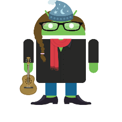

Hour of Code
New Central Library
and
Fab Lab San Diego
Exploring
with
Processing
December 8-14, 2014
Introduction
Who am I?
- Developer
- Learner
- Geek in Residence
- Guitar player
Who am I?
Who are you?
- In this class
- Outside of this class
Game plan
Lots of cool content
- Play it by ear
- Questions rock
- Explore
Rules of the
cyber-code road
- Banish the icant bus
- Be a golden developer
- Beware of backseat keyboard drivers
- Share the journey
Hello Processing
Hello Processing
Interactive tutorial
Hello Processing Gallery
http://hello.processing.org/gallery/
Let's explore an example
Reading Processing code
size(500,400);
void setup() {
background(random(255), random(255), random(255));
fill(random(255), random(255), random(255));
}
void draw() {
int diameter = random(50);
rect(mouseX, mouseY, diameter, diameter);
}
Verdi!
A traditional snake game.
Move the snake around the screen without crashingBased on the snake game example in: JavaScript for Kids By: Nick Morgan Publisher: No Starch Press Pub. Date: December 2, 2014 Print ISBN-13: 978-1-59327-408-5
Slides
http://www.gcodegarden.com/ProcessingIntro/
https://www.github.com/willingc/ProcessingIntro
Cool projects
https://webmaker.org/en-US/tools
https://thimble.webmaker.org/project/60767/remix